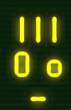
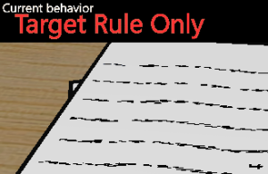
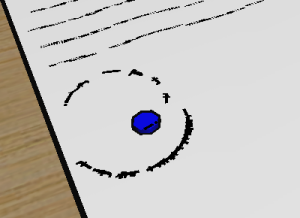
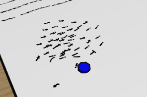
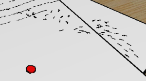
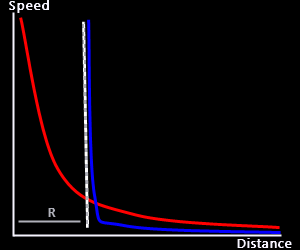
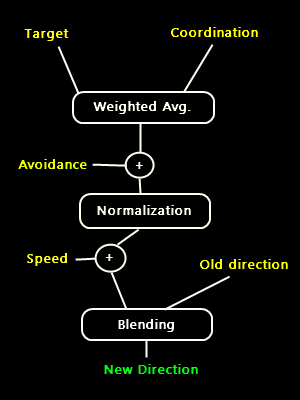

|
| |
Project 1 | Project 2 |Project 3 (Team Project) |
Paper Presentation | Final Project
Download it from HERE
Run Boids.bat to start the demo. Boids.lua contains the actual lua source code of the project.
- Use the 'Z' key and move mouse up and down to change zoom level.
- Use the 'X' key and move mouse left and right to rotate the view.
- Use the 'C' key and move mouse to scroll the view.
- Press the 'S' key to start the demo.
- Press the Space key to show / hide the flock behavior parameters.
- Use the numeric keys to change the flock behavior parameters.
- Use the 'N' key to cycle through the predefined flock behaviors.
- To move around objects just click on them and drag.
The Engine
I chose to use Electro as the 3D engine for my demo. The reason is simply that I was using Electro also for my
Videogame Design class, so I already had a pretty good knowledge about it. Plus, I was able to reuse several routines
I wrote for my game (like camera movement, object picking...). Code for the Electro engine is currently written as
a bunch of lua scripts. Lua is quite fast compared to other scripting engines and it's also pretty intuitive. The problem
with it is that it's
EXTREMELY easy to do mistakes that will be really hard to discover: For instance, Lua does not require
variable declarations, so a misspelled variable name somewhere in your program won't raise a compile time error... which in
turn means having to go through a debug phase for almost every possible kind of trivial mistake you do in your code.
|
 |
The Scene
My scene is made up by a limited number of objects: A table, two pieces of paper (one is just eye candy...) and
several other objects you can actually move around:
- A BLUE MARKER, representing the AlphaBoids "target point"
- A RED MARKER, representing a scary predator for AlphaBoids
- A CUP, representing... well...a cup :)
|
 |
Boid behavior parameters
My boids are influenced by five parameters: Speed, Steer friction, Avoidance Distance, Coordination and Coordination Distance.
These parameters can be manually set through the numeric or alternatively several predefined sets of
parameters (cooresponding to 'interesting' behaviors) can be loaded and cycled through the 'N' key. These parameters will
influence three of the four roules I implemented in my demo: The target rule, the avoidance rule and the coordination rule.
The fourth rule (predator) is not directly dependent on these parameters.
|
 |
Rule 1: Target Rule
This rule simply tells the boids to get as close as possible to the blue marker.
Since the boids have a constant speed they won't be able to just stop on the target but they will have to
keep moving, eventually stabilizing in a sort of circular movement around the marker.
The only important parameters for the Target Rule are Speed and Steer Friction.
The meaning of the Speed parameter is pretty straightforward, while Steer Friction determines how a
newly computed steering vector is blended with the previous direction vector of a boid to
generate a new direction. I do this because if I just substitute the old direction
vector with the steering vector, I can have boids rotating at any speed
they want which is quite unnatural. Also, when there is a lot of collision
avoidance going on, the direction vector would tend to be quite noisy.
|
 |
 |
Rule 2: Avoidance Rule
The Avoidance Rule tells boids that colliding with their flockmates is bad, so they will try to avoid it. This is implemented
by calculating the average direction towards near flockmates, and telling the boid to go the other way around.
It's worth noticing that boids are just trying to avoid collisions, but some collision can still take place.
Collision avoidance is just affected by the Avoidance Distance parameter, that
determines how far away each boid will look for potentially colliding flockmates.
|
|  |
Rule 3: Coordination Rule
When the coordination rule is active, boids will start trying to stay aligned with their near flockmates. The implementation
of this rule is basically the same as the Avoidance Rule: each boid will calculate the average direction of his near fellows
and keep this direction into account when calculating his own steering vector. The weight of the coordination rule on the
generation of the final steering vector is affected by the Coordination parameter. When coordination
is 0, boids won't even try to align with flockmates. When it is 1, boids will be so concentated on aligning with flockmates that
they will completely forget about the blue marker.
|
Rule 4: Predator Rule
Intuitively one may think of a possible predator rule as something that is very similar to the collision avoidance rule.
In my program I tried to differentiate them as much as possible: the result is that while boids are just trying to avoid
collisions with flockmates, they will actually EXCAPE from a predator. The visual effect is quite different, so is the implementation:
technically, while the avoidance rule just affects boid directions, the predator rule affects also their speed. The way in which
this rule affects boid speeds is actually determined by a function that maps the distance between the boid and the predator to the
speed that boid will have while going away from the predator itself.
|
 |
Predator Function Shapes
The interesting thing about the predator rule is that, depending on the shape of the distance-to-speed (DtS) function one can
achieve pretty different effects. The same rule can be used to create 'standard' predators, or to simulate an effect that
is more similar to a collision. In my demo, the boids seem to 'hit' the cup, but they are actually seeing the cup as another predator... just with a different DtS function shape. On the right you can see a qualitative image of the DtS used for the
predator marker (in red) and for the cup (in blue). Notice that R corresponds
to the cup body radius.
|
 |
|  |
Putting all Together
Now that we have the four vectors generated by the four separate rules we have to put them together in some way to generate
the final steering vector. This is pretty simple. Since we want the first three rules to affect just the boid direction we will
sum them togheter (that's not an exact sum, we consider the Coordination parameter to do a weighted average
between the target and the coordination vectors) and then Normalize the result so that it will always have length 1. Now, we
add the predator vector to the result, to obtain the final steering vector. Adding the predator vector after normalization means letting
the predator rule influence also the boid speed. The last thing we have to do is to blend the steering vector with the current boid
direction vector according to the Steering Friction parameter, in order to obtain a brand new direction vector
for the boid.
|
Saiprasad Santhanakrishnan
Your boids tend to go out of the paper and turn back at different distances from the blue goal. How do you determine this.
Also, the speed is constant so, I doubt this determines it.
Answer
It may seem a pretty complex behavior, but this is just a result of the interaction of all the tree rules in the
creation of the final steering vector. I don't have an analytical explanation of why the boids do things this way,
they just do :)
Vijay Krishnamoorthy
Whenever your boids avoid an obstacle as predator, they scatter away from the group. Despite the different
directions in which they scatter, they not only try to reach the goal again, but also try to join with the
other boids on their way to the goal. How did you implement this? Is there any special rule for the boids
to join other boids?
Answer
I didn't need any special rule. When two boids are close, they tend to have the same direction (coordination rule).
As a consequence, they will turn in a similar way from that point on and so, excluding other influences, they
will keep moving together.
Joshua Buss
1 - How did you do the click-and-drag on the objects? Sounds like most people had a hard time with this, but yours worked pretty nicely.
Reverse projections?
2 - Also, how did you implement the concept of a constant speed? All vectors getting added together will produce vectors with both
greater and lesser values than this constant, right? So how do you scale this resulting vector to a single direction with your
constant speed?
Answer
1 - No need for inverse projections, Electro somewhat does this for you. You can pass the mouse pointer coordinates to a function and
you will obtain a vector in world coordinates that 'represents' the point on which you are clicking as a ray that goes towards your
scene. You can then use the physics engine to detect collisions between this ray and your scene geometry.
2 - Good question. Basically, after I sum up vectors that represent the target, avoidance and coordination rules,
I take care of normalizing the result. In this way I will always have a vector of length 1, so it will affect only
boid directions and not speeds. My predator rule instead will infulence also boid speeds, so I add in to the steering vector
AFTER normalization.
Brian Uphoff
The boid code that you created is great. Your boids look like schooling fish when all three rules are implemented.
I believe this is primarily due to your steering friction variable. This variable adds a lot of realism to the simulation.
How did you come up with the steering friction variable? Was there any documentation that you went through that described it?
Answer
Even though this solution is not new for sure and must be documented somewhere, I came up with the idea of introducing
steering friction by my own. I didn't like the effect I got when I was just using my steering vector as the new direction for my
boids, so the most natural (and simple) solution that came into my mind was to do a weighted average between the steering vector
and the old boid direction. What I call steering friction is just the weight parameter I'm using in that calculation.
Michele Santoro
Your boids are very nice, how did you do their movements? because, if the goal is always the center of the blue big spot,
they should try to reach it, not stay at its side.
Answer
The boids actually try to reach the goal, but the fact is they can't just stop there, because they have a constant speed.
This, in addition to the steering friction parameter, makes them eventually run in circles around the blue marker, when the
target rule is the only one activated.
|
|
|
 |
|